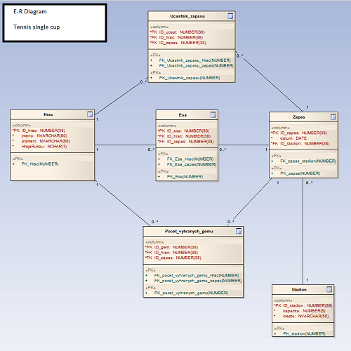

1. Obrázek s modelem (E-R diagram)

2. Slovní popis dodatečných integritních omezení
- Doplnit
- Doplnit
3. Slovní návrh API rozhraní „business logiky“ pro dva procesy
Doplnit
- Přidání vypůjčení
Vstupními parametry procesu jsou osobní číslo řidiče, spz vozidla a datum, ke kterému výpujčka je platná.
V rámci procesu je nutné ověřit platnost zadaných údajů a provést nalezení odpovídajících záznamů. Následně jsou zkontrolovány existující výpujčky a v případě
kolize s jinou výpujčkou je vrácena zpráva. Po úspěšném založení výpujčky je možné vložit jízdy.
- Přidání jízdy
Vstupními parametry procesu jsou osobní číslo řidiče, spz vozidla, názvy startu a cíle jízdy včetně
vzdálenosti a datum, ke kterému jízda je platná. Je nutné zkontrolovat platnost údajů a vyhledat odpovídající záznamy. Také jenutné ověřit zda k danému
datu, řidiči a vozidlu existuje otevřenná výpujčka;jinak není možné jízdu založit a je vrácena zpráva.
4. Pět slovně formulovaných dotazů nad schématem
Doplnit
- Vypiše všechny řidiče, kteří najezdili více jak 35000km
- Vypíše automobil a model (podle ujetých kilometru) a jejich model.
- Vypíše všechny řidiče, kteří za poslední rok udělali víc jak 20 jízd
- Vypíše (všechny) datum vypujčení, model, sqz a jméno řidiče, podle vzdálenosti, ktrou ujeli na jedno vypůjčení.
- Vypíše všechny řidiče, kterí řídili vozidlo, model MAN
5. Skript, který vytvoří databázové schéma odpovídající
E-R diagramu z bodu 1
6. Skript, který vytvoří v databázovém schématu dodatečná
integritní omezení z bodu 2
8. Skript (včetně výstupu spool), který provede postupně všechny navržené dotazy z bodu 4
Doplnit
- Dotazy
- Dotazy spool
10. Skript pro vytvoření balíku (package) a procedur „business logiky“ z bodu 3
11. Testovací skript (včetně výstupu spool obdrženého po spuštění) pro obě procedury, včetně souvisejících dotazů, které
ověří, že každá procedura provedla to co měla
12. Skript, který doplní do zvolené tabulky schématu
sloupec, který bude obsahovat odvozené hodnoty (průměrný plat
zaměstnance v rámci oddělní apod.) – tyto hodnoty budou
automaticky aktualizovány pomocí triggerů
13. Skript, který vytvoří úložiště ještě jednou v
„objektové“ podobě
14. Skript, který provede navržených pět dotazů znovu,
tentokrát nad objektovými tabulkami (operace Join bude nahrazena
využitím objektových referencí a dereferencí atd.)
15. Navrhněte slovně fakta a dimenze pro datový sklad vycházející z vaší databáze. Popište, k jakým analýzám bude možné
tento sklad využít. Identifikujte tabulky/sloupce, ke kterým bude nutné v datovém skladu navíc evidovat historické hodnoty (pokud
již v provozní databázi nejsou k dispozici).
Datový sklad by byl složen z dimezní DATUM, POBOCKA, RIDIC, VOZIDLO, MODEL a VYPUJCENI a tabulka faktů by byla JIZDY.
Využití datového skladu je možné pro analýzu ujetých kilometrů a to jak z podledu řidičů, poboček nebo jednotlivých
vozidel. Dále je možné analýzu agregovat podle datumu jako jsou dny, týdny, měsíce nebo roky.
Doplnit
Fakta
-
JIZDY
- DATUM_ID {FK}
- POBOCKA_ID {FK}
- RIDIC_ID {FK}
- VOZIDLO_ID {FK}
- MODEL_ID {FK}
- VYPUJCENI_ID {FK}
- VZDALENOST
Dimenze
-
DATUM
- DATUM_ID
- DEN
- TYDEN
- MESIC
- ROK
-
POBOCKA
- POBOCKA_ID
- MESTO
- ADRESA
- STAT
-
RIDIC
- RIDIC_ID
- JMENO
- PRIJMENI
- OSOBNI_CISLO
-
VOZIDLO
-
MODEL
- MODEL_ID
- ZNACKA
- MODEL
- OBSAH
- SPOTREBA
-
VYPUJCENI
- VYPUJCENI_ID
- DATUM_VYPUJCENI
- DATUM_VRACENI
{kind=link}